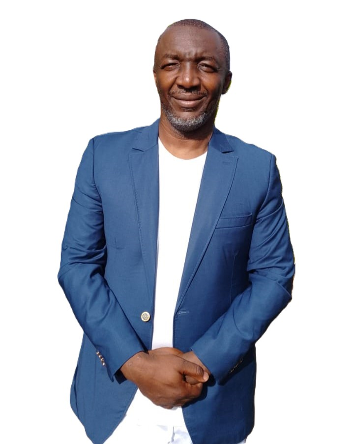
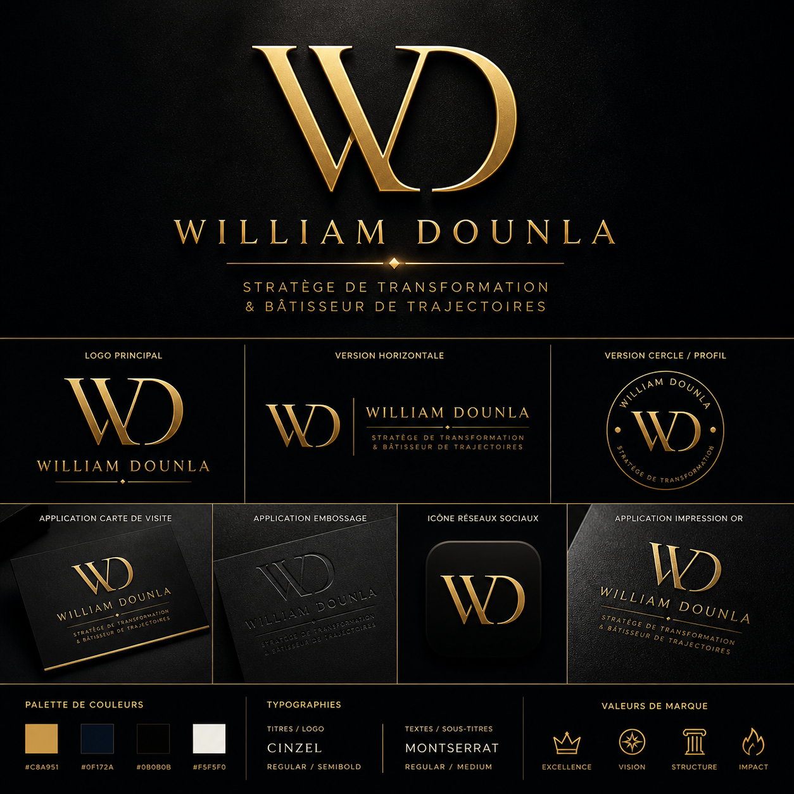

Auteur · Conférencier · Guide de vie · Bâtisseur de trajectoires

Auteur · Yaoundé, Cameroun
William Dounla est un auteur camerounais qui a compris très tôt que le manque de connaissance de soi est l'un des plus grands obstacles à l'épanouissement des jeunes africains.
Pendant des années, il a observé autour de lui des jeunes brillants, doués, pleins d'énergie — mais perdus. Non pas par manque d'intelligence, mais par manque d'outils pour se connaître, se choisir et s'orienter.
C'est cette observation qui l'a poussé à écrire « Découvre-toi et Trace ta Route » — un guide pratique et authentique, ancré dans la réalité africaine, pour aider chacun à répondre aux questions essentielles de son existence.
Aujourd'hui, William est bien plus qu'un auteur. Il est un stratège de transformation, un conférencier qui intervient dans les universités et les entreprises, et un bâtisseur de trajectoires pour la jeunesse africaine.
"Je n'écris pas des livres. Je construis un mouvement pour que la jeunesse africaine se lève, se découvre et trace sa propre route — pas celle qu'on a tracée pour elle."
William observe autour de lui des jeunes brillants mais perdus. Il commence à développer une vision : donner aux jeunes africains les outils de connaissance de soi qui manquent cruellement.
Après des mois de travail, William finalise « Découvre-toi et Trace ta Route » — un guide qui synthétise des années de réflexion, d'expériences et d'accompagnements personnels.
Le livre est publié sur Amazon (version papier et numérique) et sur YouScribe. Les premiers lecteurs témoignent d'une transformation réelle. Le mouvement commence.
Conférences, coaching, communauté en ligne. Plusieurs nouveaux livres en préparation. La marque William Dounla se construit comme un écosystème de transformation pour la jeunesse africaine.
La série William Dounla continue. Plusieurs ouvrages sont en cours d'écriture, chacun explorant une facette du développement de soi dans le contexte africain.
Or et Bleu Nuit — Excellence, vision, structure, impact.

Conférence, atelier, coaching d'équipe ou partenariat — écris-nous.